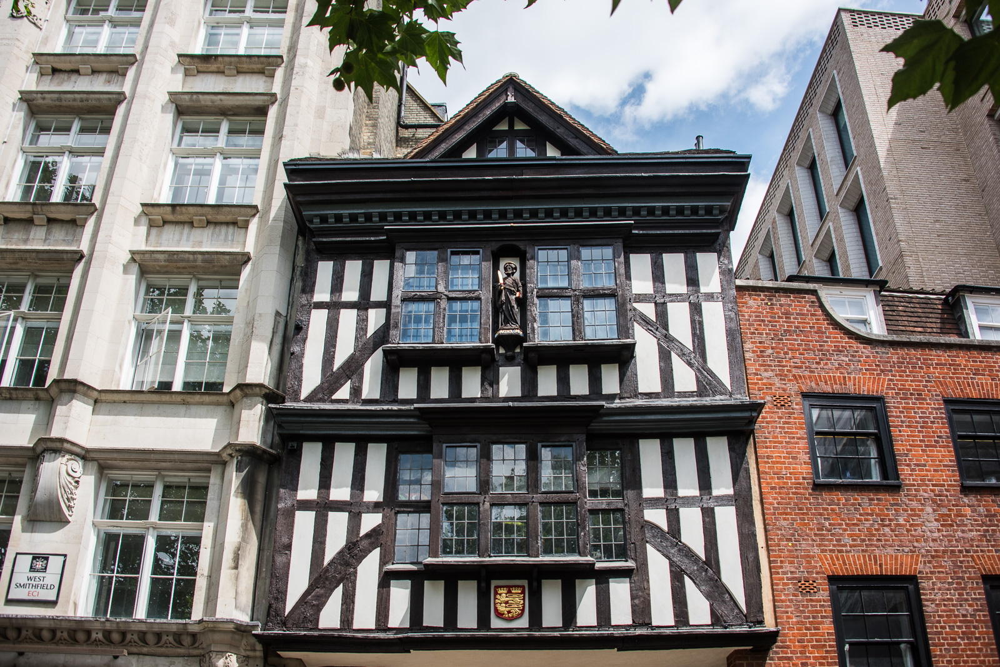
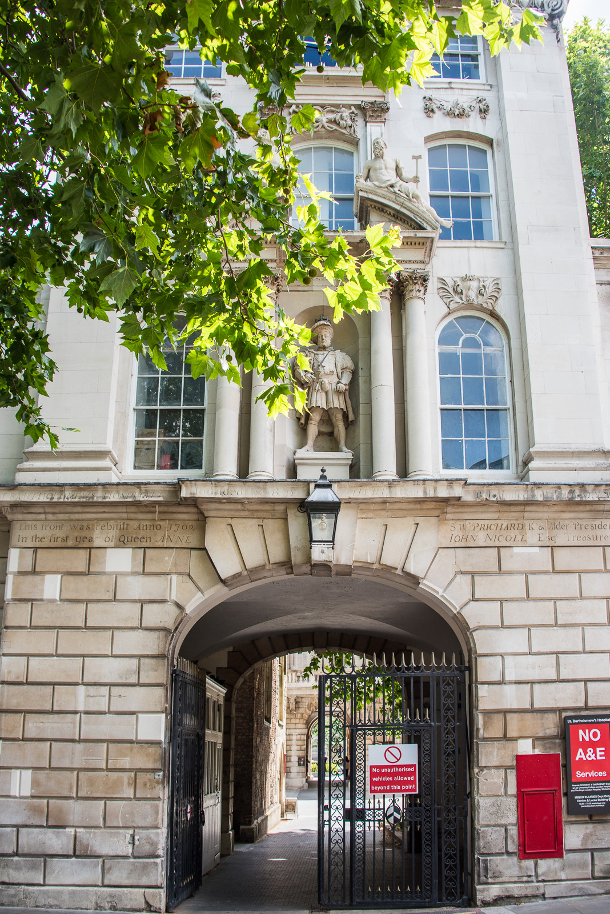

The Oldest Hospital in Britain
Still on Its Original Site
Our guide opens with the fact that anchors everything else about the place: St Bartholomew's — Barts — has stood on this exact patch of Smithfield since 1123. Over 900 years of continuous use on one site, which makes it the oldest hospital in the UK still operating where it began.
The connection is personal rather than professional. An email went round a few years ago, forwarded on by the guide's parents, asking for volunteers to help during a major restoration of the North Wing. The guide's father trained as a doctor here in the 1970s and 80s — and the guide herself was born in the hospital's East Wing, in the Bayford Operating Theatre.
Volunteering meant more than handing out leaflets. During the restoration, with the North Wing's scaffolding still up, the guide led tours in hard hats and wellies through the working site — watching the building return, piece by piece, to something closer to its original state.
What the medieval hospital actually looked like is hard to picture now: a scattered, ramshackle collection of buildings, chaotic by the standards of any century. By the early 1700s, with London's population climbing fast, the governors decided the whole site needed replacing — something organised, fit for purpose, and built to last.
Sir James Gibbs &
the Free Commission
The governors had an unusual stroke of luck: one of their own number was Sir James Gibbs, among the most sought-after architects working in London at the time. He offered his services to the hospital for free.
Gibbs had trained in Rome under Carlo Fontana and worked in both the Baroque and Palladian idioms. By the time he took on Barts he had already designed St Mary le Strand and was midway through his second London church commission — St Martin-in-the-Fields, in Trafalgar Square. His Palladian credentials ran deeper still: the Radcliffe Camera in Oxford, the building that ends up behind every news report filed from the city, is also his.
Because the hospital relied entirely on donations to rebuild itself — raise a bit, build a bit, raise a bit more — the four-block plan was as practical as it was handsome. It also gave Gibbs the chance to stage an entrance: visitors arriving off a noisy, chaotic Smithfield market square would pass through narrow hallways and emerge into the calm, ordered geometry of The Square beyond. The effect, by design, was reassurance — these governors know what they are doing.
The Building With
No Medicine in It
The North Wing was the first of Gibbs's four buildings to go up — and, our guide points out, the one oddity of a hospital's first building is that it contains no medical facilities whatsoever. Its job was fundraising.

The entrance hall is a grand, double-height space with two murals by William Hogarth looking down over it. The whole wing was built to attract London's wealthy — dinners, events, a place to rub shoulders with other people of standing — and, not incidentally, to encourage exactly those people to donate. The North Wing is best understood as a machine for softening people up before they were asked for money.
Above the entrance are the hospital's arms — a black-and-white shield that recurs across the site, marking donations from generations of governors.
Petitions, Patronage
& the Deserving Poor
Governors ran the hospital with no medical training whatsoever, and — this is the detail that lands hardest — they had complete control over who was admitted for treatment.
To be admitted, you needed a letter of recommendation from a governor, an admission fee, and — grimly — the name of whoever would cover your burial costs if you died in the hospital's care. Fees could be paid by an employer or parish, but the destitute, or anyone judged incurable, were simply turned away.
A governor's letter did double duty: it helped the admission board judge whether Barts could actually treat you, and it vouched for your "moral character." Patients who broke house rules faced real penalties — miss church on a Sunday and you lost your evening meal.
The system also worked as patronage. Donate money or become a governor, and you gained the right to nominate your own workers for preferential treatment — obviously useful if your business depended on a healthy workforce. The wealthy, meanwhile, were never treated here at all; they were seen in their own homes. Barts was built for the working poor, not the upper classes who funded it.
"They were completely in control of who was treated in the hospital — no medical experience whatsoever. There seemed to be a real link, in people's minds, between being destitute and having some kind of moral failing."
— our guide
An Italian, an Englishman
& a Free Rivalry
The staircase leading up to the Great Hall was meant to do the same job as the entrance hall below it — impress and loosen the purse strings of visiting donors. Large-scale historical or mythological murals were fashionable in grand houses and institutions of the period, and the hospital first approached the well-known, and expensive, Venetian painter Giacomo Amigoni for the commission.
William Hogarth heard about it and offered his services for free. Hogarth was famous chiefly for social satire — works like A Rake's Progress — rather than the grand biblical or mythological scenes usually reserved for foreign masters. Taking on the staircase was, for him, a departure and something of a gamble.
Hogarth was, as our guide puts it, as local an artist as it was possible to be: born in St Bartholomew's Close, right next to the hospital, and baptised in the font at St Bartholomew the Great across the square. He became a governor in 1734. He was also passionate about supporting English artists over foreign imports, and believed himself every bit Amigoni's equal — a rivalry that had simmered for years before this commission gave it somewhere to land.
Hogarth assembled a small team. Landscape painter and set designer George Lambert added the scenery behind both large paintings — he had a studio in Covent Garden that may be where The Pool of Bethesda was painted before being brought here. An assistant known only as Mr Richards painted the smaller scenes from the life of Rahere, made to resemble terracotta, along with the scrollwork and the ceiling decoration leading into the Great Hall.
The Pool of Bethesda
The larger of Hogarth's two paintings depicts a miracle from the Gospel of St John: an angel occasionally stirs the waters of a pool in Jerusalem, and whoever reaches it first is healed. A man who has never once won that race lies on the ground; Jesus tells him to take up his bed and walk, and — miraculously — he does.
As a hospital governor, Hogarth had access to the wards at Barts, and the people gathered round the pool may well be modelled on patients he had actually observed. Medical students have since identified specific, plausible conditions in the painted figures — a woman with a swollen, reddened breast (a sign of mastitis or possibly cancer), and a pale, greenish-skinned figure suggesting anaemia, historically nicknamed "the green sickness" for exactly that colouring.
Look closer and the painting is quietly critical of its own audience. An attendant pushes aside a mother and her baby to make room for a wealthy woman being carried into the water by servants — first in line by privilege rather than need. It's a pointed message for the paying donors filing past on their way to the Great Hall: charity, done properly, doesn't queue-jump for money.
Underneath the main scene, Mr Richards's smaller panels — painted to imitate terracotta — show scenes from the life of Rahere, the hospital's founder, whose own story forms the tour's final stop.
The Good Samaritan
Facing Bethesda on the opposite wall is the parable of the Good Samaritan — an Israelite traveller, robbed and left injured by the roadside, passed over by a priest and a Levite before a Samaritan stranger stops, tends his wounds, and pays an innkeeper for his recovery.
The message to potential donors is not subtle, and isn't meant to be: a reminder of the charitable duty to help people from any background, not only one's own community. Hogarth signs the painting with a small, personal joke — his own pug, known to have been called Trump, appears jumping down at the edge of the scene, tucked in alongside a second dog in the shadows.
Cleaning Three Centuries
of Candle Soot
Coal fires, candle soot and simple sunlight had done real damage by the time of the recent restoration. Hogarth's canvases needed cleaning and varnishing within twenty years of completion — against his own explicit instructions, since he worried varnish would leave a distracting sheen. A condition report from 1810 recorded that Bethesda had "suffered much from the sun," and that The Good Samaritan, cleaned around 1780, had been pressed so hard against its frame that the canvas creased.
By the time proper restoration began in the 1980s, the paintings were caked in seven layers of natural resin varnish, hardened and discoloured after two centuries. Some earlier over-cleaning had gone the other way, stripping paint down to bare canvas in places.
The most recent conservation work, part of the Sharing Historic Barts project, involved a gentle clean with deionised water and only localised retouching — tiny amounts of reversible paint added where original paint was lost. Removing the accumulated dirt revealed something new: infra-red photography has picked up pentimenti, faint traces of changes Hogarth made to the composition mid-painting, now visible as the later paint layers have grown more transparent with age.
One visitor on the tour — training as an architect specialising in building conservation — pointed out a detail easy to miss entirely: a full modern heating and cooling system now runs beneath the historic floor of the Great Hall, installed to regulate temperature and humidity for the sake of the paintings and plasterwork above, with the original floorboards lifted, cleaned and relaid on top so that none of it shows.
The Charter Window
The stained glass Charter Window celebrates the hospital's re-founding by Henry VIII in 1546 — a necessity after the earlier dissolution of the monasteries had stripped Barts of its priory status and its funding. The king is shown handing over the hospital's royal charter, officially signed in 1547, just weeks before Henry VIII's death. The charter itself survives in the hospital's own archives.
The kneeling figure receiving the charter is disputed: possibly Sir John Gresham, Lord Mayor of London — which would represent the City of London formally taking on responsibility for the hospital — or Thomas Vicary, surgeon to Henry VIII and the hospital's first superintendent.
The window is the sole surviving feature of the medieval Great Hall, moved into the new North Wing in the 1740s, a decade after the building itself was finished. When it was made in the 1600s, decorative stained glass was reserved for only the grandest public buildings — churches, guildhalls — and the governors wanted their new hall to compete with the City's finest, both to impress guests and to encourage donations.
Generations of glaziers, working between 1652 and 1946, etched their own names and dates into the glass — an accidental chronology of repair that conservators still use today to date each pane and plan careful restoration.
Restoring the glass after the Second World War, conservator Wilfred Drake dismissed the window as having "little artistic merit," calling its newest panes "ALL UGLY." Hospital staff disagreed — and the window survived.
Conservation work resumed in 2024, cleaning the glass, stabilising old repairs and correcting areas where panels had bowed with age — generously supported by the Pilgrim Trust and the Barts League of Nurses.
Stucco, Poppies
& Gaslight
Look up, and the ceiling is the room's real showpiece: designed by James Gibbs and executed by the master plasterer Jean Baptiste St Michele, in the decorative lime plaster known as stucco — his only identified work anywhere in Britain. Stucco is easily worked while wet and can be left in its natural white or painted once dry; here, it was modelled entirely by hand, on site.
The design is Baroque, packed with botanical motifs chosen for their associations with healthcare: oak leaves for strength, laurel wreaths for triumph, palm branches for peace. Some of the rosettes are poppies — a quiet nod to the historic use of opium for pain relief. The gilded detail was added only in the 19th century; most of the plaster underneath is original.
Conservation was mostly about cleaning rather than replacing: a team of five spent weeks removing dirt and soot residue with soft animal-hair brushes and conservation-grade vacuums, retouching gilding by hand with acrylic gold paint, and repairing a section of water damage in the north-east corner where plaster had come away from the wall entirely.
The Donor Boards
The walls carry framed and painted panels listing over 3,000 donor names, the earliest from 1547 and the most recent added by Barts Heritage between 2020 and 2025. In 1736 the governors commissioned "a Mr Richards" — a different Richards to Hogarth's assistant — to letter the panels, the earliest names in gold leaf.
Not every gift was cash. Nicholas Dickens is recorded in 1653 as donating "two Acres of Land, in Shoreditch." Institutions appear too — the City of London Brewery Company (1869) and the Post Office (1855) both have their names on the south wall.
Like most charities dependent on donation, some of the wealth that funded Barts came directly from the exploitation of others. Hans Sloane — whose collection forms the basis of the British Museum — the Beckford family, and Edward Colston, a Barts governor whose Bristol statue was famously toppled in 2020, were all connected to the transatlantic slave trade.
Other names cut differently. Angela Burdett-Coutts, once called "the richest heiress in England," gave £100 in 1850 and spent most of her fortune on philanthropy; 30,000 people are said to have attended her wake. William Sharp, a private surgeon whose clients included George III, became a governor in 1778 — he and his brother Granville were prominent slavery abolitionists.
Dinners, Exams, a Strike
& a Pie Full of Pigeons
Built in the 1730s as a formal room for governors' meetings — recorded in the minutes as "a large Hall for the meeting of the Governours at a General Court" — the North Wing also housed administrative rooms, a home for the hospital clerk, and a room for admitting, triaging and discharging patients.
Governors' dinners were a regular fixture, including the "Buck Feast," a tradition dating to the 1600s, and an annual Old Students' dinner where Barts alumni returned to the hall via the Hogarth stair — the paintings' themes of charity and healing serving, quite deliberately, as a reminder of the guests' own obligations.
Less formally, the hall hosted exhibitions and performances — and, in its early years, laundry, much to the hospital clerk's irritation. From the late 1880s until the Second World War, the Barts Amateur Dramatics Club staged Christmas shows here, with patients and staff invited to dress rehearsals free of charge. During the 1926 General Strike, the hall became a makeshift dormitory for medical students recruited into the Special Constabulary.
The hospital's 850th anniversary in 1973 was marked here with a mock Tudor feast — including a pie filled with live pigeons — and an art exhibition opened by the Poet Laureate, John Betjeman, who wrote a short poem for his friend, Barts surgeon John Wickham:
"The ghost of Rahere still walks in Bart's
— John Betjeman
It gives an impulse to generous hearts."
Above each fireplace hang portraits of three figures significant to the hospital's history: Henry VIII, in the style of Hans Holbein the Younger; Saint Bartholomew, shown with the flaying knife of his martyrdom; and King Edward VII, painted by Luke Fildes while still Prince of Wales, who dined in the Great Hall in January 1868 on his first official royal visit.
The Signatures
Nobody Was Meant to See
The donor boards record who paid for the Great Hall. A quieter, less deliberate record survives in the attic space above it, hidden from any visitor: a wall carved with almost 100 signatures, left by the craftspeople who actually built and maintained the room, often noting their trade alongside their name and date.
Carpenter Tobias Priest worked at Barts for around fifteen years. He was commissioned to mount the King Henry VIII portrait in the Great Hall and carved the moulds the plasterers used for the ceiling above it. When he died in 1749, his wife Ann took over and managed his carpentry contract for the West Wing — a rare surviving record of a woman running a skilled trade in her own right in the mid-18th century.
In the Charter Window itself, glaziers working between 1652 and 1946 left the same kind of mark, scratching their names and the date into the glass they repaired — creating, without meaning to, a working chronology of the window's conservation history.
Rahere &
the Vision at Smithfield
The hospital's origin is recounted almost as a piece of medieval hagiography, and the tour closes with it told in something close to that voice: Rahere, a courtier at the court of King Henry I, undertook the month-long pilgrimage to Rome — dangerous going, by all accounts, with robbers and wild beasts on the road. There he fell gravely ill with what was called the Roman fever.
Believing himself close to death, Rahere prayed to St Bartholomew and vowed that if he recovered, he would build a hospital for the poor on returning home. He recovered — and, on the journey back, had a vision in which St Bartholomew himself instructed him to found both a priory and a hospital in his name, at a place called Smithfield, just outside the walls of the City of London.
Smithfield — "smooth field" — was, at the time, a fearful and unclean place: marshland outside the city walls, used for public executions and little else. Building anything there at all was itself a kind of statement.
Rahere kept his promise. Work began in 1123, and within a few years the priory and hospital were ready to heal both bodies and souls. Miracles were quickly credited to the new foundation — sight restored to a boy blind from birth, a woman's swollen tongue healed, twisted limbs straightened. Rahere served as prior for around twenty years until his death in 1145.
His tomb survives today in the church of St Bartholomew the Great, immediately across the square from the hospital — one of London's best-preserved medieval churches, rebuilt in its current form after the original Great Hall's predecessor but still holding the original font in which William Hogarth himself was baptised centuries later. A statue of Saint Bartholomew, holding the flaying knife of his own martyrdom, stands nearby — the same vision, and the same saint, that gave the hospital its name in 1123 and, after Henry VIII's brief interruption, its charter again in 1546.